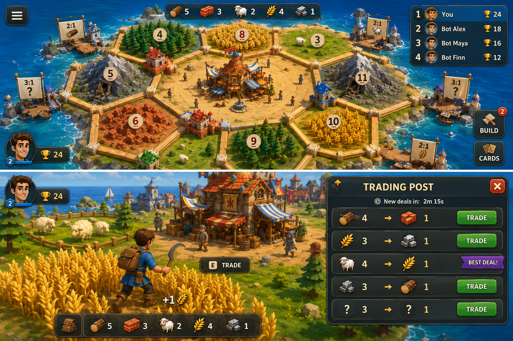
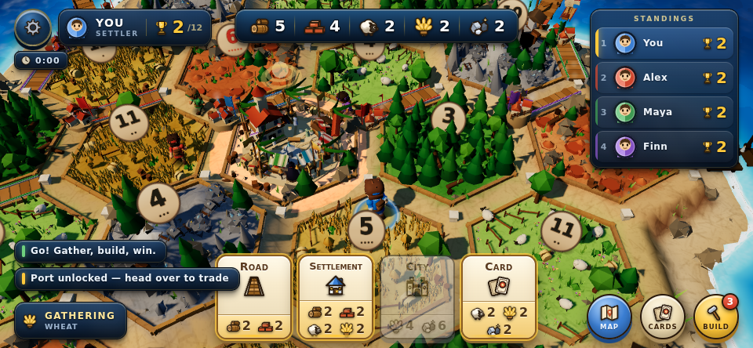

Island Settlers
Playable build status · landscape mobile web · three.js r169, no bundler
Launch
The game is plain ES modules — no build step, no install. It needs to be served
over HTTP (module imports don't work from file://).
cd island-settlers python3 -m http.server 5173 # or: npx serve -l 5173
Then open http://localhost:5173 in Chrome or Safari.
On your phone: with the computer and phone on the same wi-fi, open
http://<your-computer-ip>:5173 and turn the phone landscape. Desktop keyboard fallback:
WASD to run, Space to gather, Tab for the board map.
Current build


Reference comparison


Gauntlet — what the critics found and what changed
| Finding | Root cause | State |
|---|---|---|
| "Flat ambient shading, nothing casts a shadow" | Shadows were rendering — the rig put them at 88% of lit value, so they were invisible. Rebalanced to 55–60%. | Fixed |
| Blown-out white polygon at top-centre | The market's trade beacon: an additive cone with depthWrite:false clipping every channel to 255. Isolated by binary-searching scene children with gl.readPixels. |
Fixed |
| Number tokens blown out, 6/8 red convention lost | The token shader skipped the tonemapping and colour-space includes, so it was the only object in the scene outside the ACES pipeline. Also rendering as ellipses. | Fixed |
| "I cannot tell where one hex ends" | No hex borders. Added timber beams plus limestone posts at all 54 intersections, merged into the ground mesh for zero extra draw calls. | Fixed |
| "The settler is a 20px blob" | Hero scaled 2.35× on an inner group, saturated tunic, contact shadow (was buried under the tessellated ground), player ring, always-held tool. | Fixed |
| "Icons are non-functional at 24px" | Nine icons re-authored and proof-sheeted at 96/48/28/24/20px. Nothing renders a resource below 20px anywhere. | Fixed |
| "The app's own name is squatting on the prime HUD slot" | Title ribbon deleted; the top-centre slot is now the resource bar. | Fixed |
| Camera spring exploded to 3,000 units on a slow frame | Explicit Euler at stiffness 120 diverges past ~0.09s steps. Now sub-steps at 1/120s. | Fixed |
| Trade sheet traded 4:1 from anywhere on the island | The panel called doTrade() directly with its opening ratio, bypassing the proximity rule. Now quotes through the economy layer. |
Fixed |
| Replayed matches kept stale bot state | lastKnight from the previous match against a reset clock read as "played a knight in the future" and suppressed the heuristic for the whole replay. |
Fixed |
Verification
| # | Check | Result |
|---|---|---|
| 1 | Launches clean — no exceptions, no broken shaders | PASS |
| 2 | Opening draft: 8 settlements, 8 roads, reaches play | PASS |
| 3 | All five resources gatherable | PASS |
| 4 | Productivity affects gathering (1.91× per swing, 5-pip vs 1-pip) | PASS |
| 5 | Market trades 4:1 and requires proximity | PASS |
| 6 | Ports unlock, then trade 3:1 / 2:1 | PASS |
| 7 | Road connection rules enforced | PASS |
| 8 | Settlement distance rule + connected road | PASS |
| 9 | Cities upgrade only your own settlements | PASS |
| 10 | Knight, Road Building and Victory Point all work | PASS |
| 11 | Raider blocks everyone except the player who moved it | PASS |
| 12 | Bots gather/trade/build/score — 0 unexplained resource gains in 60 matches | PASS |
| 13 | Longest Road changes hands | PASS |
| 14 | Largest Army changes hands | PASS |
| 15 | Victory + results screen (both win and loss branches driven for real) | PASS |
| 16 | Replay starts a clean match | PASS |
| 17 | Matches last 3–5 minutes | PARTIAL — 70% in band |
| 18 | Usable at 667×375 and 960×444 | PASS |
| 19 | Performance within budget | PASS |
Run it yourself: node tools/verify.mjs ·
node tools/testmatch.mjs ·
node tools/simulate.mjs --matches=60 --gathersys
Pacing — 60 simulated matches
min 119.6s p25 183.8s median 203.6s p75 234.9s max 368.9s mean 215.2s in the 3-5 minute band 42/60 (70%) under 3 minutes 13/60 (22%) over 5 minutes 5/60 ( 8%) hit the 7-minute cap 0/60 win rate by strategy expansion 25% | cities 35% | cards 40% (expected 33%) award churn per match Longest Road 1.7 changes | Largest Army 2.0 changes
Tuned from a measured baseline of 32 seconds — the first playable was roughly 8× too fast. Yields flattened to 1 (productivity now rides on gather time), costs doubled, victory target 7 → 12, Longest Road raised to 4 VP to make expansion competitive.
Known gaps
- Match-length tails. 22% of matches finish under 3 minutes and 8% run past 5. The median is right; the distribution is wider than ideal.
- Bot trading is vestigial — about 0.19 trades per bot per match. Walking to the resource almost always beats a 4:1 swap. A human can trade end to end without trouble; this is a balance question, not a bug.
- Strategy balance skews to the card bot (40% vs an expected 33%).
- Safe-area insets are untestable headlessly —
env()returns 0 under headless Chrome. An 18px gutter floor is in place, but a notched phone in landscape has not been verified on real hardware. - Frame rate has not been measured on a real GPU. The capture rig runs SwiftShader at ~3fps, which validates correctness, not performance. Draw calls and triangles are within budget; actual device fps is unconfirmed.
- Audio has never been heard. It is fully synthesized and structurally verified (every sfx schedules real nodes, no NaN envelopes), but headless Chrome produces no sound.
Architecture
Roughly 14,000 lines across 50 modules. Everything is procedural — no external models, textures, fonts or audio files. Geometry is built in code; textures are painted to an offscreen canvas; sound is synthesized with the Web Audio API.
| Layer | Modules |
|---|---|
| Frozen contracts | core/constants.js, core/rules.js, board/layout.js, board/nodes.js — headless-safe, so the 3D game and the offline simulator run identical rules |
| World | terrain, island, water, sky, props, borders, propkits, geo, paint |
| Structures | structures, market, buildkit, buildtown, buildport |
| Entities | settler (skinned rig), settlerBody, settlerCarry, playerController |
| Systems | camera, input, gathering, economy, bots, botBrain, matchflow, flowUI, flowCamera, flowRestart |
| Interface | hud, overview, panels, icons, dom, three stylesheets |
| Audio / FX | synth, sfxbank, beds, audio, particles, labels, rings, effects |
| Tools | verify.mjs, simulate.mjs, shoot.mjs, testmatch.mjs |